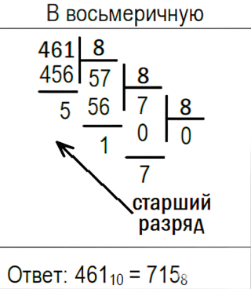
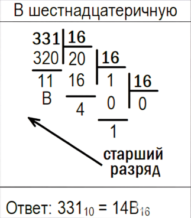
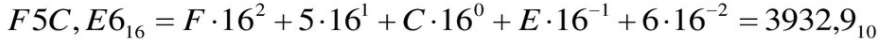
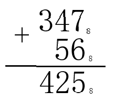

Урок 4. Восьмеричная и шестнадцатеричная системы счисления
1. Зачем нужны восьмеричная и шестнадцатеричная системы?
Двоичная система удобна для компьютеров, но человеку записывать длинные последовательности нулей и единиц неудобно. Для компактного представления двоичных кодов используют системы счисления с большим основанием: восьмеричную (основание 8) и шестнадцатеричную (основание 16). Они позволяют каждой группе битов сопоставить один символ, что делает запись короче и понятнее. Например, двоичное число 111100001010 может быть записано как 36088 в восьмеричной или F0A16 в шестнадцатеричной. Эти системы широко применяются в программировании, при настройке оборудования и в документации.
2. Алфавит и основание
- Восьмеричная система: использует цифры 0, 1, 2, 3, 4, 5, 6, 7. Каждая цифра соответствует трём двоичным разрядам (триаде).
- Шестнадцатеричная система: использует 16 символов: цифры 0–9 и буквы A, B, C, D, E, F, где A = 10, B = 11, C = 12, D = 13, E = 14, F = 15. Каждая цифра соответствует четырём двоичным разрядам (тетраде).
2.1. Таблица соответствия
| 10 | 2 | 8 | 16 |
|---|---|---|---|
| 0 | 0000 | 0 | 0 |
| 1 | 0001 | 1 | 1 |
| 2 | 0010 | 2 | 2 |
| 3 | 0011 | 3 | 3 |
| 4 | 0100 | 4 | 4 |
| 5 | 0101 | 5 | 5 |
| 6 | 0110 | 6 | 6 |
| 7 | 0111 | 7 | 7 |
| 8 | 1000 | 10 | 8 |
| 9 | 1001 | 11 | 9 |
| 10 | 1010 | 12 | A |
| 11 | 1011 | 13 | B |
| 12 | 1100 | 14 | C |
| 13 | 1101 | 15 | D |
| 14 | 1110 | 16 | E |
| 15 | 1111 | 17 | F |
3. Перевод из десятичной системы в восьмеричную и шестнадцатеричную
Для перевода целого десятичного числа в систему с основанием q (q = 8 или 16) его нужно последовательно делить на q, записывая остатки (от 0 до q-1), пока частное не станет равным 0. Затем остатки выписываются в обратном порядке. Для дробной части число последовательно умножается на q, целые части результата (от 0 до q-1) записываются как цифры после запятой.
3.1. Перевод целых чисел

Пример 1 (десятичное → восьмеричное): Перевести 12510 в восьмеричную систему.
125 ÷ 8 = 15 (остаток 5)
15 ÷ 8 = 1 (остаток 7)
1 ÷ 8 = 0 (остаток 1)
Записываем остатки снизу вверх: 1758.

Пример 2 (десятичное → шестнадцатеричное): Перевести 28410 в шестнадцатеричную систему.
284 ÷ 16 = 17 (остаток 12 → C)
17 ÷ 16 = 1 (остаток 1)
1 ÷ 16 = 0 (остаток 1)
Результат: 11C16.
3.2. Перевод дробных чисел
Пример 3 (десятичная дробь → восьмеричная): Перевести 0,4062510 в восьмеричную систему.
0,40625 × 8 = 3,25 → целая часть 3
0,25 × 8 = 2,0 → целая часть 2
Дробная часть стала 0. Получаем 0,328.
Пример 4 (десятичная дробь → шестнадцатеричная): Перевести 0,210 в шестнадцатеричную систему с точностью до трёх знаков.
0,2 × 16 = 3,2 → целая часть 3
0,2 × 16 = 3,2 → снова 3 (процесс зацикливается)
Записываем: 0,333...16 (периодическая дробь).
4. Перевод из восьмеричной и шестнадцатеричной в десятичную
Для перевода числа из любой позиционной системы в десятичную используется развёрнутая форма записи (как в уроке 3).
Пример (восьмеричное → десятичное): 2418 → X10
2·82 + 4·81 + 1·80 = 128 + 32 + 1 = 16110.
Пример (шестнадцатеричное → десятичное): 2E16 → X10
E = 14.
2·161 + 14·160 = 32 + 14 = 4610.
Пример с дробью (восьмеричное): 12,48 → десятичная.
1·81 + 2·80 + 4·8-1 = 8 + 2 + 0,5 = 10,510.
Пример с дробью (шестнадцатеричное): A,116 → десятичная.
A = 10, 1·16-1 = 1/16 = 0,0625. Итого: 10 + 0,0625 = 10,062510.

5. Связь с двоичной системой. Перевод через триады и тетрады
Поскольку 8 = 23 и 16 = 24, перевод между двоичной и этими системами выполняется очень просто: группируем двоичные разряды справа налево (для целой части) и слева направо (для дробной) по 3 (для восьмеричной) или по 4 (для шестнадцатеричной) и заменяем каждую группу соответствующей цифрой.
5.1. Двоичная → восьмеричная
Пример: 1110112 → восьмеричная.
Разбиваем справа налево на триады: 111 011. (Если слева не хватает разрядов, дописываем незначащие нули.)
1112 = 7, 0112 = 3. Ответ: 738.
Пример с дробью: 1101,1012 → восьмеричная.
Целая часть: 1101 → разбиваем справа налево: 1 101 → дополняем слева до трёх: 001 101 → 1 5 (т.к. 001=1, 101=5) → 158.
Дробная часть: 101 → разбиваем слева направо: 101 (уже триада) = 5. Ответ: 15,58.
5.2. Двоичная → шестнадцатеричная
Пример: 1110112 → шестнадцатеричная.
Разбиваем справа налево на тетрады: 11 1011. Дополняем левую группу нулями: 0011 1011.
00112 = 3, 10112 = B. Ответ: 3B16.
Пример с дробью: 11101,1012 → шестнадцатеричная.
Целая часть: 11101 → разбиваем справа налево: 1 1101 → дополняем: 0001 1101 → 1 D.
Дробная часть: 101 → разбиваем слева направо: 1010 (дополняем справа нулём до 4 бит) = A. Ответ: 1D,A16.
5.3. Обратный перевод (восьмеричная/шестнадцатеричная → двоичная)
Каждая цифра восьмеричного числа заменяется трёхзначным двоичным кодом, каждая цифра шестнадцатеричного – четырёхзначным (согласно таблице). Незначащие нули в начале и конце можно опускать.
Пример: 578 → двоичная.
5 → 101, 7 → 111. Ответ: 1011112.
Пример: 2F16 → двоичная.
2 → 0010, F (15) → 1111. Ответ: 1011112 (первые два нуля отбрасываем).
Пример с дробью: 12,38 → двоичная.
1 → 001, 2 → 010 (целая часть); 3 → 011 (дробная). Ответ: 001010,0112 = 1010,0112.
6. Арифметика в восьмеричной и шестнадцатеричной системах
Сложение и вычитание выполняются по тем же правилам, что и в десятичной системе, но с учётом основания. Рассмотрим несколько примеров.
Сложение в восьмеричной: 3478 + 568.
Записываем столбиком (изображение):

Пояснение: 7+6=1310 = 158 (пишем 5, перенос 1); 4+5+1=1010 = 128 (пишем 2, перенос 1); 3+1=4. Ответ: 4258.
Сложение в шестнадцатеричной: A316 + 1F16.
A=10, F=15. 3+15=1810 = 1216 (пишем 2, перенос 1); A+1+1=1210 = C. Ответ: C216.